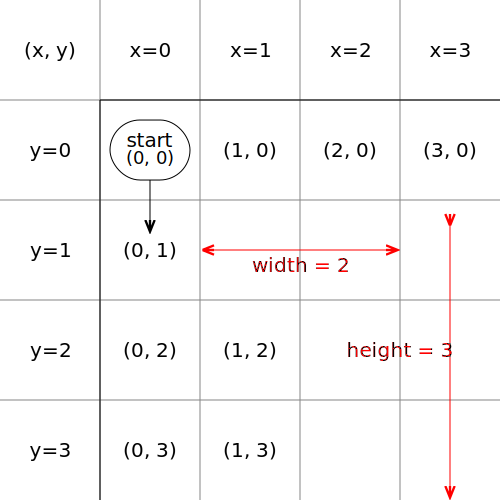

개요
메인함수 구조
코드에 의해 제작된 이미지, iseohyun.com, CC-BY-SA
순서도를 그리는 메인 함수는 drawChart()입니다. drawChart()함수를 호출하기 위해서는 다음 파일이 include되어야 합니다.
<script src="script/c.js"></script>
<script src="script/draw.js"></script>| 파일명 | 설명 | |
|---|---|---|
| FlowChart.html | 예제 페이지 | |
| devNote.html | 개발자 가이드(현재 페이지) | |
| script/ | draw.js | 메인 기능 |
| insertCode.js | 예제 코드를 저장하고 메인 함수에 조달하는 기능 | |
| c.js | C언어의 입력을 정형화하고, 노드 구조로 분석하는 기능 | |
drawChart의 arguments는 다음과 같습니다.
| 순서 | 변수명 | 설명 | 기본값 |
|---|---|---|---|
| 1 | code | 순서도를 그릴 코드(또는 타겟명) | text input id='code-input' |
| 2 | target | 순서도를 그릴 canvas주소 | canvas id='flowchartCanvas' |
| 3 | minSz | 출력 Canvas의 최소 Size | {x:600, y:800} |
예시
<textarea id="code-input" rows="16" cols="50">if(a==3) {
print(3);
}</textarea>
<canvas id="example" style="border:1px solid #000000;"></canvas>
<script>
drawChart('code-input', 'example', { x: 0, y: 0 });
document.getElementById('code-input').addEventListener('input', function () {
drawChart('code-input', 'example', { x: 0, y: 0 });
});
</script>위 코드는 아래 내용을 구현하는 코드 예시입니다. textarea에 예제코드를 입력하면, canvas(example)에 출력합니다.
아래 예제 코드에서 print(3);을 하나 더 복사 붙여넣기 해 봅니다.
노드 구성
code를 한 줄 한 줄 분석하면서 nodes에 push합니다. 이 때, 각 Attribute가 갖는 의미는 다음과 같습니다.
0: {content: 'i++', id: 18, type: 'plain', next: 7, x: 1, …}
1: {id: 9, content: 'break', type: 'plain', next: 13, x: 2, …}
2: {id: 8, type: 'if', content: 'i==5', yes: 9, next: 18, …}
3: {id: 7, content: 'i<10', type: 'loop', next: 13, yes: 8, …}
4: {id: 2, type: 'plain', content: 'print(a)', next: 3, x: 4, …}
5: {id: 3, type: 'plain', content: 'print(b)', next: 5, x: 4, …}
6: {id: 1, type: 'if', content: 'a==2', yes: 2, next: 5, …}
7: {id: 5, type: 'plain', content: 'print(c)', next: 13, x: 3, …}
8: {id: 0, type: 'if', content: 'a==1', yes: 1, next: 13, …}
9: {id: 13, type: 'plain', content: 'print(d)', next: 14, x: 0, …}
10: {id: 14, type: 'end', content: 'end', x: 0, y: 5, …}
11: {id: -1, type: 'start', content: 'start', x: 0, y: 0, …}
| node Attribute | 설명 | 예시 | 산출시기 |
|---|---|---|---|
| id | 노드 고유 아이디(보통 라인번호) start: -1 end: 문서의 마지막 |
10 | code2node#() |
| type | 노드그림 |
if: 조건, 마름모 plain : 평문, 사각형 loop: 조건(재귀 있음), 마름모 start, end: 시작, 끝, 둥근사각 |
|
| content | 출력할 내용 | 'print(hello);' | |
| next | 다음블럭의 id | 12 | |
| yes, no | 분기가 있는 경우 id | else가 없으면 no가 없음 next는 분기문의 out의미 |
|
| x. y | 본인의 위치 | start = (0, 0) | getPos() |
| width, height | 자신의 하위 블럭요소까지 고려한 크기 | 11 |
노드 예시
메인함수 구조
코드에 의해 제작된 이미지, iseohyun.com, CC-BY-SA
if(a==1) {
if(a==2) {
print(a);
print(b);
}
print(c);
} else {
for (; i<10; i++) {
if (i==5) {
break;
}
}
}
print(d);

좌표정보
"coordinate.svg", iseohyun.com, CC-BY-SA
| id | type | content | next | yes | no | x | y | width | height |
|---|---|---|---|---|---|---|---|---|---|
| 18 | 'plain' | 'i++' | 7 | - | - | 1 | 3 | 1 | 1 |
| 9 | 'plain' | 'break' | 13 | - | - | 2 | 2 | 1 | 1 |
| 8 | 'if' | 'i==5' | 18 | 9 | - | 1 | 2 | 2 | 2 |
| 7 | 'loop' | 'i<10' | 13 | 8 | - | 0 | 2 | 3 | 2 |
| 2 | 'plain' | 'print(a)' | 3 | - | - | 4 | 1 | 1 | 2 |
| 3 | 'plain' | 'print(b)' | 5 | - | - | 4 | 2 | 1 | 1 |
| 1 | 'if' | 'a==2' | 5 | 2 | - | 3 | 1 | 2 | 3 |
| 5 | 'plain' | 'print(c)' | 13 | - | - | 3 | 3 | 1 | 1 |
| 0 | 'if' | 'a==1' | 13 | 1 | 7 | 0 | 1 | 3(bug) | 5 |
| 13 | 'plain' | 'print(d)' | 14 | - | - | 0 | 4 | 1 | 2 |
| 14 | 'end' | 'end' | - | - | - | 0 | 5 | 1 | 1 |
| -1 | 'start' | 'start' | 0 | - | - | 0 | 0 | - | - |
그림 그리기
객체 그리기
좌표 정보에 기반해 객체를 그립니다.
| 변수명 | 설명 | 기본값 |
|---|---|---|
| margin | 좌표와 좌표 사이의 거리 (1, 0) <-> (1, 1) 사이의 거리 |
30 |
| blockWidth | 객체 가로 길이 | 100 |
| blockHeight | 객체 세로 길이 | 50 |
| paddingLeft | 전체 그림의 왼쪽 여백 | 30 |
| paddingTop | 전체 그림의 위쪽 여백 | 10 |
화살표 그리기
- from, to정보를 기반으로, 가장 가까운 거리로 화살표를 그립니다.
- 2회 이상 커브가 필요하다면, 해당 경로에 다른 객체가 없는지 확인합니다.
- 가로막는 객체가 있다면, margin영역으로만 경로를 구성합니다.
수정이력
- 2025-01-10: v0.1, 문서 작성